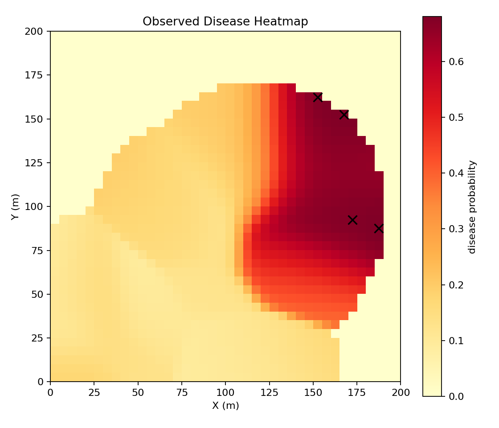
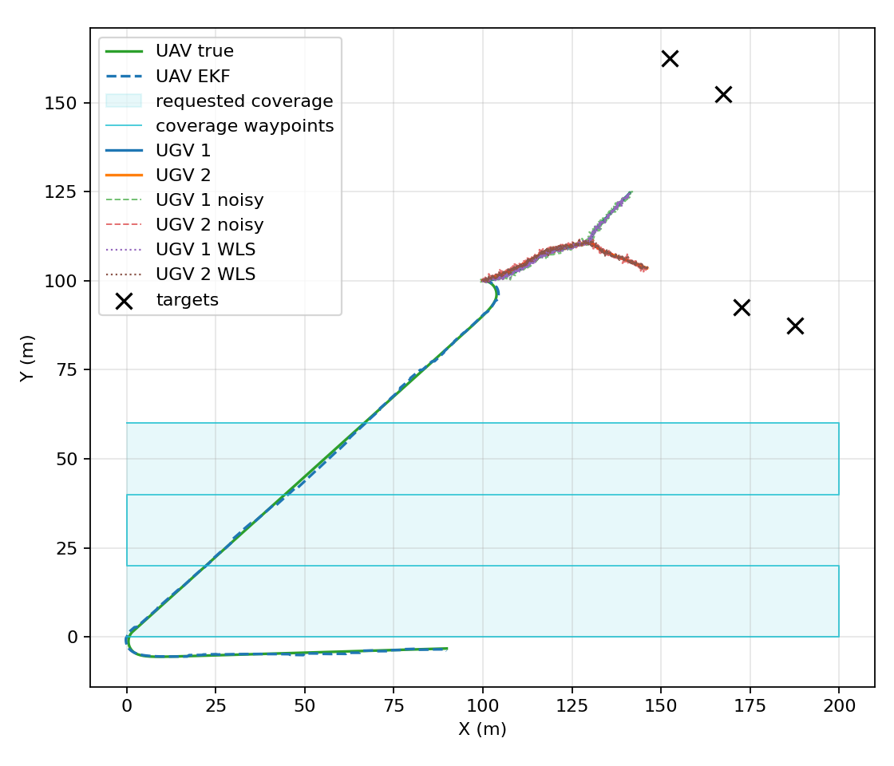

Scenario Coverage
Baseline, high-noise, and extreme-uncertainty scenarios are defined as reproducible YAML configurations.
Python-first UAV/UGV simulation baseline for early crop disease detection, scenario comparison, EKF/WLS estimation, and reproducible visual outputs.
Status: Reproducible simulation baseline
Green Vigilance is a Python migration and reconstruction of a UAV/UGV precision-agriculture system originally explored for early crop disease detection. The current work focuses on a reproducible simulation baseline rather than a production-ready field robot.
The simulation compares scenario configurations, estimates UAV and UGV localization error, assigns ground targets from a disease heatmap, and generates visual outputs and summary reports that can be regenerated from YAML inputs.

The pipeline starts from a scenario YAML configuration, then runs UAV unicycle dynamics with EKF estimation, camera/frustum observation, disease heatmap generation, UGV target assignment, noisy UGV localization with a WLS estimate, and finally summary JSON, comparison CSV/Markdown, and figure outputs.
Baseline, high-noise, and extreme-uncertainty scenarios are defined as reproducible YAML configurations.
The UAV follows a deterministic 30% coverage path, supporting repeatable comparisons between scenario settings.
Disease heatmaps drive UGV target assignment for ground-level inspection candidates.
The simulation generates static 2D and 3D outputs for trajectories, observations, and scenario interpretation.
Scenario summaries and comparison reports are exported as structured files and Markdown tables.
pytest-based test coverage and GitHub Actions CI support regression checks for the Python baseline.
2711Observed leaves
0.463 mUAV RMSE
0.536 mUGV WLS RMSE
1866Observed leaves
1.580 mUAV RMSE
0.941 mUGV WLS RMSE
1228Observed leaves
1.825 mUAV RMSE
1.568 mUGV WLS RMSE
| Scenario | Observed leaves | UAV RMSE | UGV WLS RMSE |
|---|---|---|---|
| baseline | 2711 | 0.463 m | 0.536 m |
| high_noise | 1866 | 1.580 m | 0.941 m |
| extreme_uncertainty | 1228 | 1.825 m | 1.568 m |
The validation is qualitative at this stage; exact numerical equivalence with the earlier MATLAB/report implementation has not been formally validated.


Source code and the local report are available below.